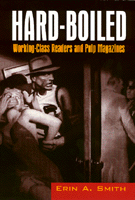

<body bgcolor="#FFFFFF" text="#000000" link="#0000FF" vlink="#CC0000" alink="#CC0000"><center><hr width="350" size="1" align="center" noshade>An examination of the culture that produced and supported pulp-fiction<hr width="350" size="1" align="center" noshade><p><a href="https://cdcshoppingcart.uchicago.edu/Cart/ChicagoBook.aspx?ISBN=9781566397681&&PRESS=temple" target="_top">Buy this book!</a> | <a href="https://cdcshoppingcart.uchicago.edu/Cart/Cart.aspx?PRESS=temple" target="_top">View Cart</a> | <a href="https://cdcshoppingcart.uchicago.edu/Cart/Cart.aspx?PRESS=temple" target="_top">Check Out</a></p><p></p></center><!--none//--><h1>Hard-Boiled</h1>
<H2>Working-Class Readers and Pulp Magazines</H2>
<h3>Erin A. Smith</h3>
<P>cloth 1-56639-768-5 $85.50, May 00, <FONT COLOR=#990033>Available</FONT>
<br>paper 1-56639-769-3 $29.95, May 00, <FONT COLOR=#990033>Available</FONT>
<br>Electronic Book 1-59213-911-6 $29.95 <FONT COLOR=#990033>Available</FONT>
<BR> 248 pp
6x9
5&nbsp;halftones
</P><BLOCKQUOTE><I>"Picking up a classic 'hard-boiled' detective novel by Dashiell Hammet or Raymond Chandler&#151or even modern-day Sara Paretsky&#151is an entirely different experience after reading Smith's fascinating book. Now the pages of these novels and their close cousins, the pulp magazines, have become rich canvases for working out struggles over readers' class and consumer identities."</I>
<br>&#151<b>Lizabeth Cohen</b>, Harvard University<I></I></BLOCKQUOTE>
<P>In the 1920s a distinctively American detective fiction emerged from the pages of pulp magazines. The "hard-boiled" stories published in <I>Black Mask</I>, <I>Dime Detective</I>, <I>Detective Fiction Weekly</I>, and <I>Clues</I> featured a new kind of hero and soon challenged the popularity of the British mysteries that held readers in thrall on both sides of the Atlantic. In <I>Hard-Boiled</I> Erin A. Smith examines the culture that produced and supported this form of detective story through the 1940s.
<P>Relying on pulp magazine advertising, the memoirs of writers and publishers, Depression-era studies of adult reading habits, social and labor history, Smith offers an innovative account of how these popular stories were generated and read. She shows that although the work of pulp fiction authors like Dashiell Hammett, Raymond Chandler, and Erle Stanley Gardner have become "classics" of popular culture, the hard-boiled genre was dominated by hack writers paid by the word, not self-styled artists. Pulp magazine editors and writers emphasized a gritty realism in the new genre. Unlike the highly rational and respectable British protagonists (Miss Marple and Hercule Poirot, for instance), tough-talking American private eyes relied as much on their fists as their brains as they made their way through tangled plot lines.
<P>Casting working-class readers of pulp fiction as "poachers," Smith argues that they understood these stories as parables about Taylorism, work and manhood; as guides to navigating consumer culture; as sites for managing anxieties about working women. Engaged in re-creating white, male privilege for the modern, heterosocial world, pulp detective fiction shaped readers into consumers by selling them what they wanted to hear&#151stories about manly artisan-heroes who resisted encroaching commodity culture and the female consumers who came with it. Commenting on the genre's staying power, Smith considers contemporary detective fiction by women, minority and gay and lesbian writers.
<BR>&nbsp;<h2>Excerpt</h2><P>Excerpt available at <a href="http://www.temple.edu/tempress">www.temple.edu/tempress</a></p>
<BR>&nbsp;<h2>Reviews</h2>
<p><i>"Not until Erin Smith's innovative study have we had such a fully-grounded look at the imagined community of working-class fraternity, masculinity, and consumerism through which pulp audiences interpreted the 'fast-talking' heroes of hard-boiled detective fiction. A lively, engaging book that ranges from the linguistics to the sartorial dimensions of the genre, from labor to cultural capital, from advertising copy to literary theory."</i>
<br>&#151<b>Christopher P. Wilson</b>, author of <I>Cap Knowledge: Police Power and Cultural Narrative in Twentieth Century America</I>
<p><i>"</i>Hard-Boiled<i> [is] a valuable contribution to the study of American literature between the wars."</i>
<br>&#151<b><i>Modern Fiction Studies</i></b>
<p><i>"Erin Smith's </i>Hard-Boiled<i> is an extremely interesting and well-written analysis of the pulp magazines."</i>
<br>&#151<b><i>American Literature</i></b>
<p><i>"</i>Hard-Boiled<i> ably demonstrates that detective pulp fiction functioned contradictorily, simultaneously empowering its readers and keeping them in line. Moreover, Smith's careful research persuasively reconstructs the proletarian readers who left no written records of their experience, thus making a substantial contribution to the field of working-class studies."</I>
<br>&#151<b><i>The Journal of American History</i></b>
<p><i>"One of the few works of pure American Studies that I have as yet encountered, </i>Hard-Boiled<i> is a work of interdisciplinary scholarship..."</i>
<br>&#151<b><i>Journal of Social History</i></b>
<p><i>"...offers a thoroughly inventive approach to sensational crime fiction.... Smith's deft readings demonstrate the often surprising ambiguity of the pulps' gender, labor, and consumer politics."</i>
<br>&#151<b><i>Novel: A Forum on Fiction</i></b>
<BR>&nbsp;<h2>Contents</h2><P>
<p>Acknowledgments
<br>Introduction
<p><b>Part I: Reconstructing Readers</b>
<br>1. The Hard-Boiled Writer and the Literary Marketplace
<br>2. The Adman on the Shop Floor: Workers, Consumer Culture, and the Pulps
<p><b>Part II: Reading Hard-Boiled Fiction</b>
<br>3. Proletarian Plots
<br>4. Dressed to Kill
<br>5. Talking Tough
<br>6. The Office Wife
<br>Afterword
<br>Notes
<br>Index
</P><BR>&nbsp;<H2>About the Author(s)</H2>
<table><tr><td valign="top"><img src="/tempress/authors/1405_au.gif" height="90" width="75"></td><td width="100%" valign="middle"><p><B>Erin A. Smith</B> is Assistant Professor of American Studies and Literature at the University of Texas.</P></td></tr></table>
<BR><H2>Subject Categories</H2>
<p><A HREF="/tempress/american.html" TARGET="_top">American Studies</a>
<BR><A HREF="/tempress/literature.html" TARGET="_top">Literature and Drama</a>
</p>
<p align="center"><a href="https://cdcshoppingcart.uchicago.edu/Cart/ChicagoBook.aspx?ISBN=9781566397681&&PRESS=temple" target="_top">Buy this book!</a> | <a href="https://cdcshoppingcart.uchicago.edu/Cart/Cart.aspx?PRESS=temple" target="_top">View Cart</a> | <a href="https://cdcshoppingcart.uchicago.edu/Cart/Cart.aspx?PRESS=temple" target="_top">Check Out</a></p><p><font face="Arial" size="1"><a href="copyright.html" onMouseOver="window.status='Web Copyright Policy';return true;" onMouseOut="window.status=''" title="Web Copyright Policy">&copy;</a> 2015 <a href="http://www.temple.edu" target="new" onMouseOver="window.status='Link to Temple University home page';return true;" onMouseOut="window.status=''" title="Link to Temple University home page">Temple University</a>. All Rights Reserved. http://www.temple.edu/tempress/titles/1405_reg.html</font></p>